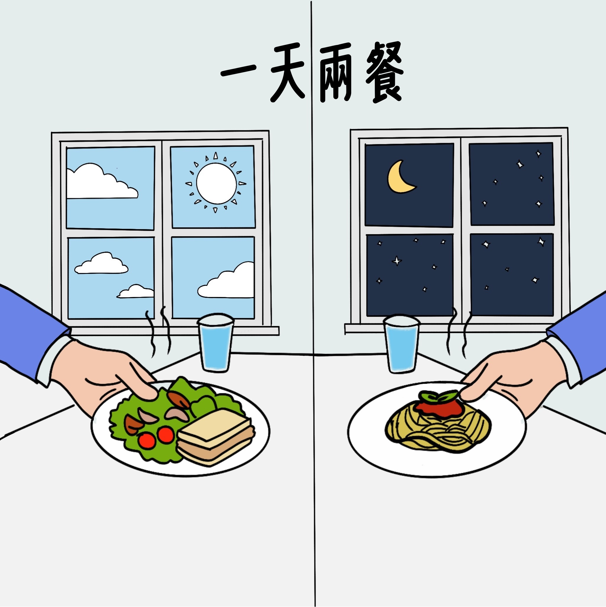
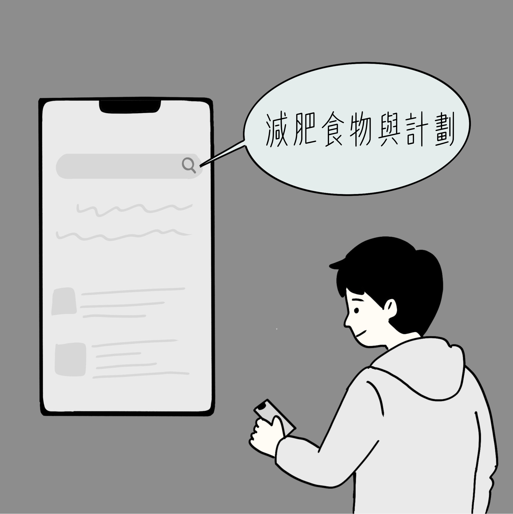
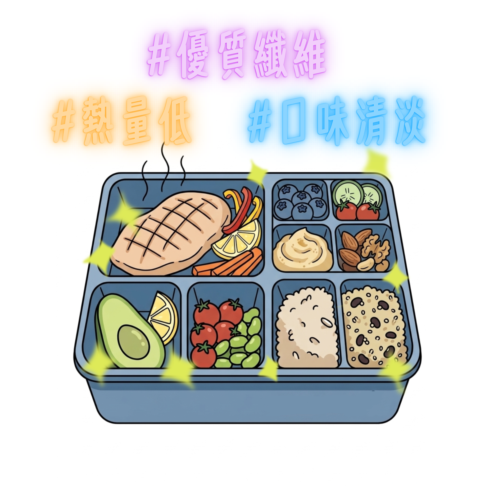
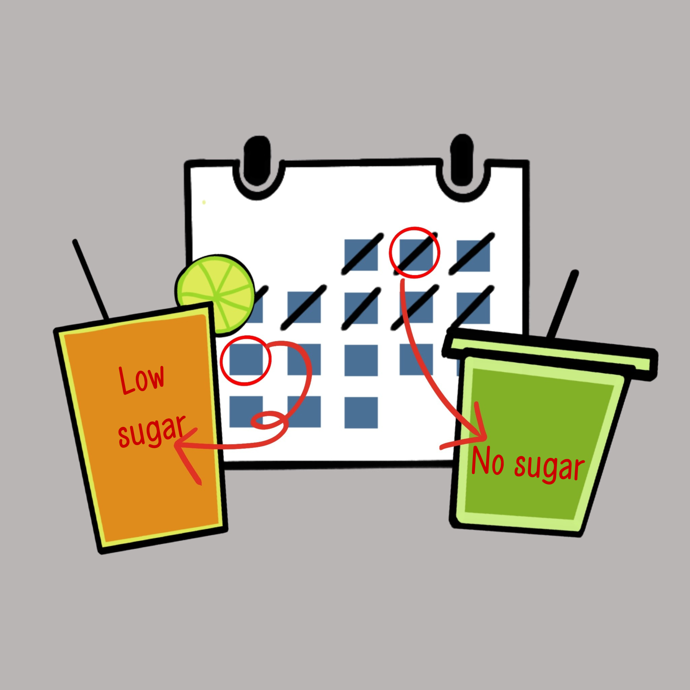
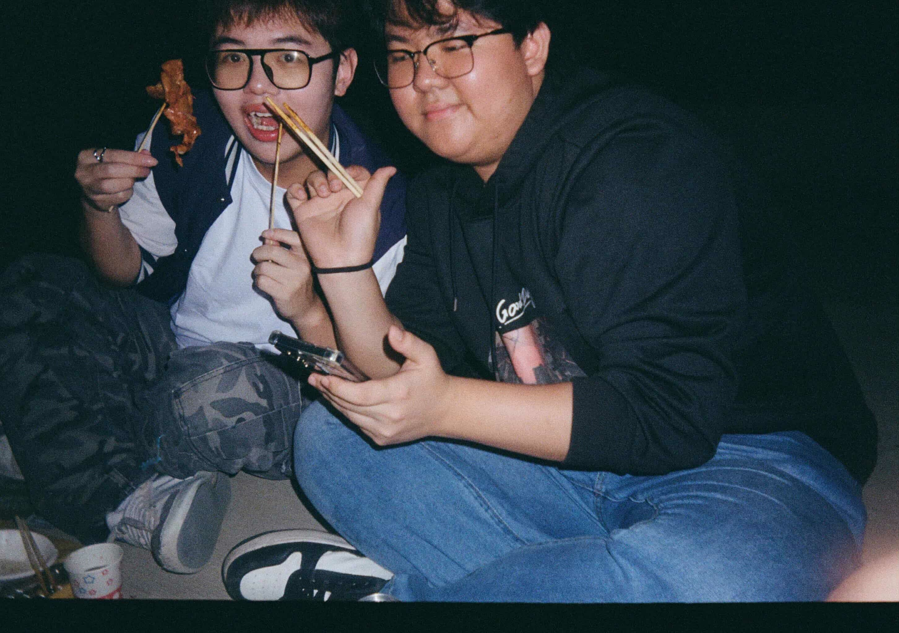
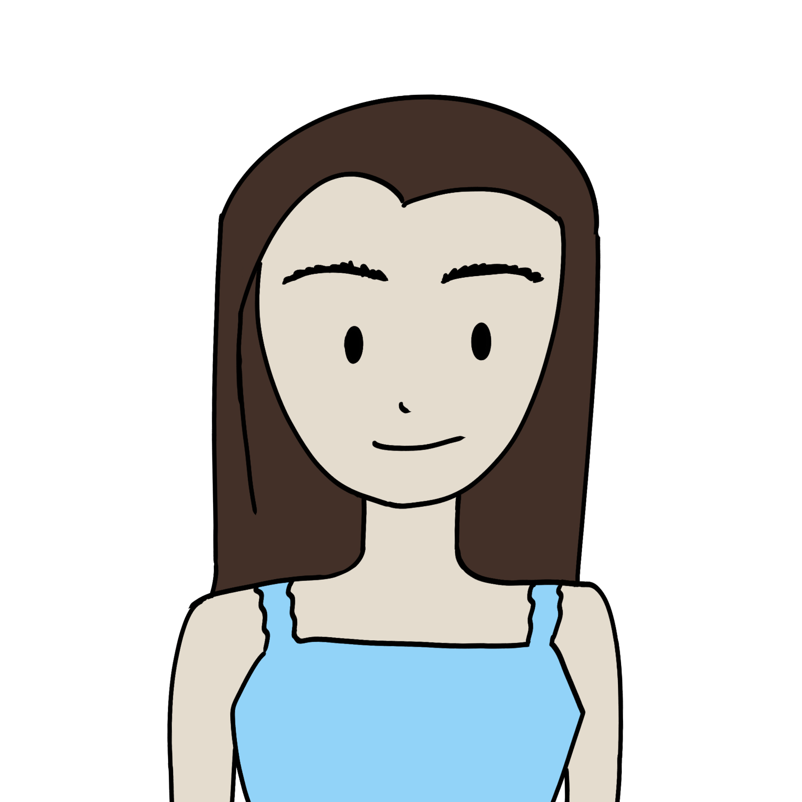
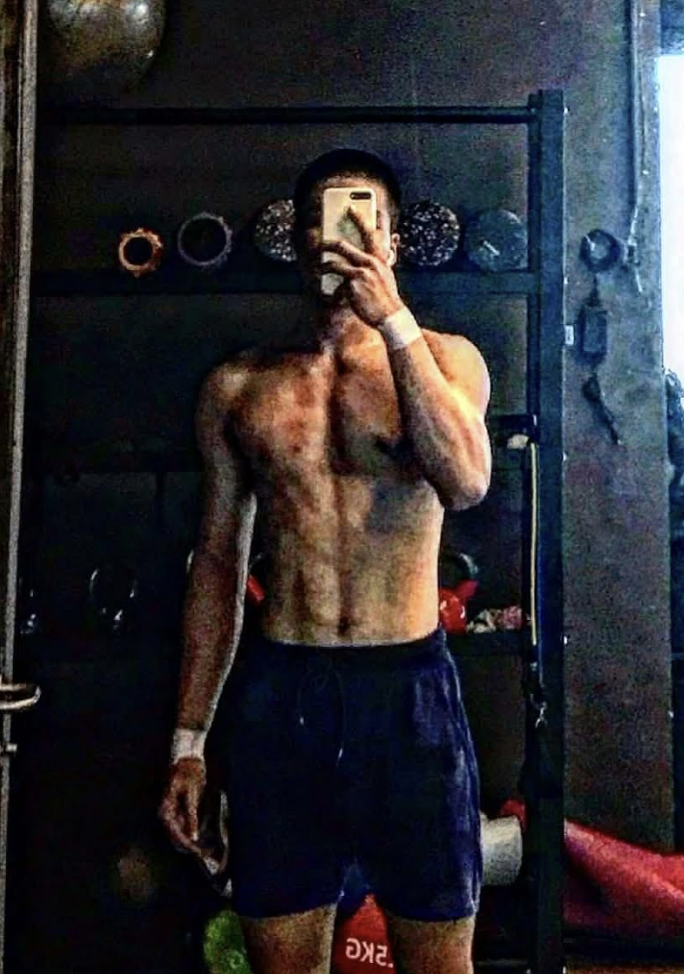
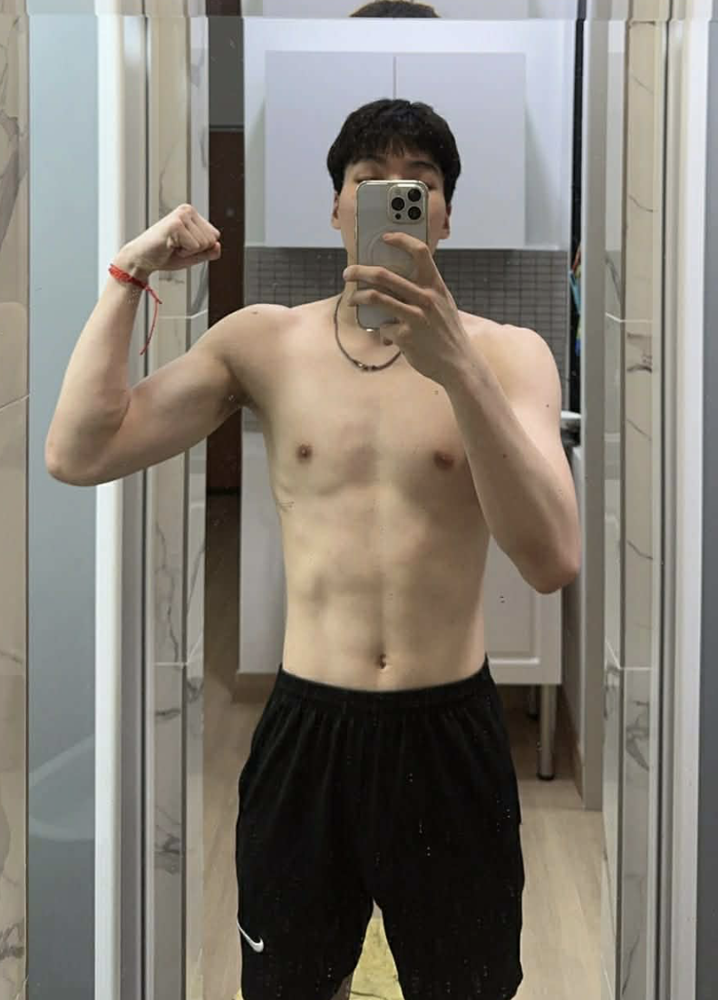
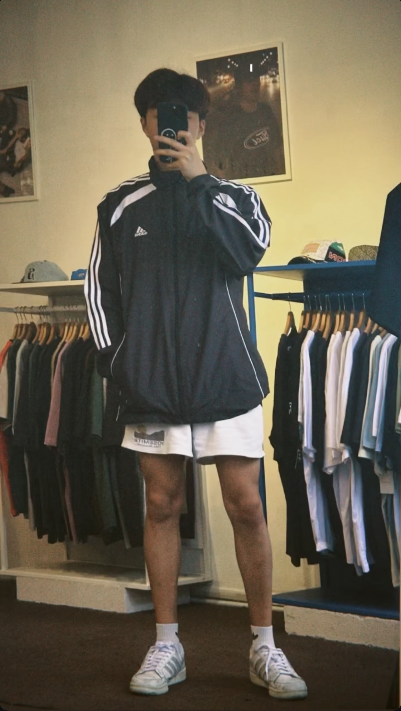
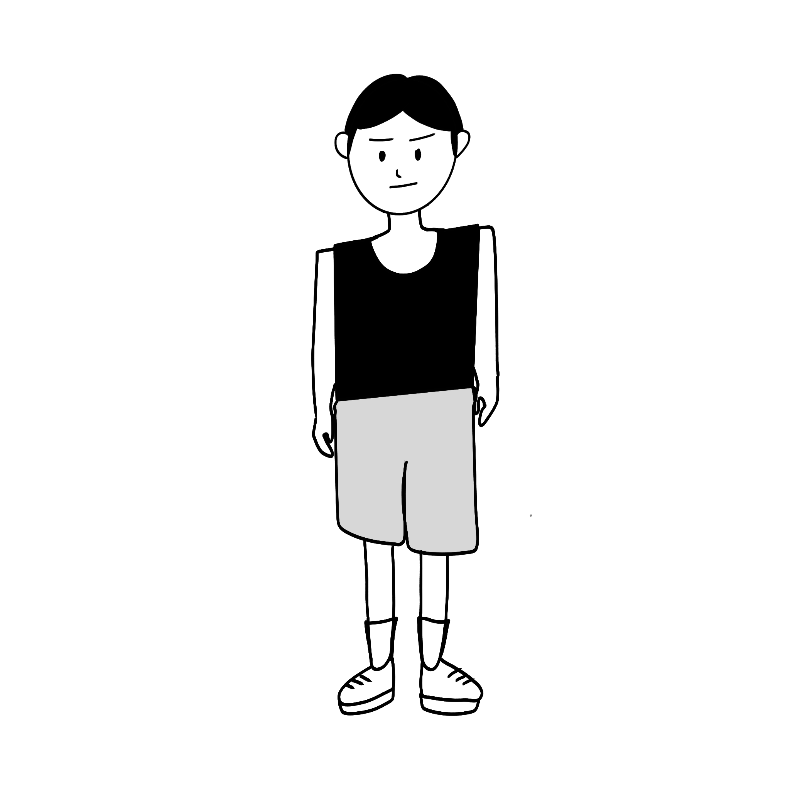

身高/體重：183 cm/100kg
最高體重/理想體重：115kg/85kg
健康亮起紅燈
體態管理成為不得不的選擇
「我覺得我這樣的人從小到大都會經歷『胖子』這種嘲笑是很正常的事情。」政大傳播學院大一大二不分系學生張皓承無奈地說道，除了朋友有時沒有邊界的玩笑話，連坐Uber時都會被司機叫做「小胖」，或「胖胖的男孩」，讓他從小就對於身材有自卑感，甚至會先以自嘲的方式與人互動，避免他人的玩笑話傷害到自己。「我一直都意識到自己需要減肥，但始終沒有去執行，直到健康亮了紅燈，我才真的下定決心。」皓承吐露，在國小四年級開始就面臨過胖的問題，也因此在國中三年級的時候萌生了減肥的念頭。當時的他是嘗試以節食的方式減肥，但是因為過程太難堅持導致減肥失敗。然而大二期間，皓承因動了椎間盤手術，為降低身體負擔，醫生建議他減重，才讓他再次重視體重問題。
皓承最高體重曾達到115公斤，由於手術後無法進行激烈運動，目前他主要以飲食控制來管理體重。
皓承的飲食控制計劃
向下滑動看皓承如何調整飲食
一天只吃兩餐

網路查詢適合減重期間攝取的食物資訊

健康餐盒
#熱量低 #優質纖維 #口味清淡

限制飲料攝取
飲料一個月不超過兩次，以無糖、微糖飲品為主。
「透過飲食的控制，我覺得還蠻有效的，我從1月到現在已經瘦了15公斤，我期望自己可以瘦到85公斤。」皓承說道。
滑動看看皓承的減肥效果
Before After試著搭配屬於你的健康餐點吧！
讓我們參考心咪與皓承的飲食控制方式，一起試著搭配一天的餐點，看看如何在兼顧碳水化合物、蛋白質與膳食纖維攝取的同時，朝理想體態邁進。

年齡：21歲
身高/體重：160cm/50kg
年齡：21歲
身高/體重：160cm/49kg
理想體重：47kg
同樣利用飲食控制作為主要體態管理方法的于小姐（化名）表示，即使他知道自己並沒有達到衛福部衛生署所公佈的BMI標準的過胖指標，但還是會因為自己的身材尚未達到理想狀態，認為自己的體態需要持續精進。他也補充，個人的自信與否有一部分是來自別人的眼光。「每天出門穿衣服的時候，如果那陣子變胖了，就會覺得自己穿什麼都不好看，站在鏡子前面覺得很自卑、很不開心，甚至會影響到整天的心情。」于小姐分享道，因為經常在鏡頭前或舞台進行演出，因而更會擔心上鏡的狀況是否符合觀眾的審美。
對於社群媒體的看法，鍾心咪說道，「社群媒體會有各種方式教你怎麼瘦，我看到一個就會去嘗試做，但是最後發現沒用時，就會不知道怎麼辦，反而更焦慮。」社群媒體上充斥著各類減肥方法，但由於影片是可以剪輯和修圖的，並且各類方法適合的群體也有所不同。閲聽人經常在觀看各類瘦身影片後產生「他可以做得到，為什麼我不行？」的想法，但當方法不奏效時，閱聽人將對瘦身有更大的挫折，進而感到焦慮。
然而，社群媒體的內容也將直接影響年輕人的想法。
年齡：21歲
身高/體重：184cm/72kg
長期保持健身習慣的恐龍（化名），會因為拍照、穿搭效果及社群媒體上的內容，而對自己的身材感到不滿意，甚至產生「身材還不夠好」的想法，更加努力地想要精進體態。恐龍日常生活中都透過規律運動、飲食控制與作息管理來維持身材。他分享，自己平時著重於高蛋白質的攝取，再搭配適量的碳水化合物與低脂肪的補充，並維持固定的健身習慣和保持充足的睡眠，以達到理想的體態管理效果。此外，他也會透過攝入肌酸、魚油、酵素及維生素等營養補充品，加速身體恢復、提升運動表現，並降低運動傷害風險。
Sam：最近健身怎麼樣？
恐龍：很不錯啊。給你看看我的健身結果：


Before AfterSam：真好。我怎麼練、怎麼吃，都沒有辦法和你一樣壯。我好像天生就太瘦。

恐龍：那你要多吃蛋白質，有空一起練。
Sam：沒問題。

年齡：22歲
身高/體重：178cm/66kg
最低體重/理想體重：55kg/70kg
「穿衣服不好看、拍照也顯得自己很單薄，就開始覺得過瘦是一種困擾。」身高178公分，體重最輕曾到55公斤的Sam（化名）吐露心聲表明，當別人以「太瘦」形容自己時，常讓他感到無奈，也會讓他感覺自己的努力被否定。Sam的理想身材並非特別壯碩的身材，他只希望自己的身材能夠支撐起衣服的版型，展現出好看的體態，對他來說就夠了。Sam也表示，他的食量並不小，也有努力地在健身，但效果卻沒有預想中的明顯。他也坦言，增肌的過程並不比減重簡單，除了在抖音或是小紅書吸取增肌相關的知識，他也意識到並非增加進食量就能達到增加體重的目的，蛋白質對於肌肉增長的重要性更是不容忽視，為此調整飲食結構比例。
隨著增肌逐漸成為生活的一部分，Sam每個月生活支出也隨之增加，其中包括每個月的健身房會費與乳清蛋白粉。不僅如此，「增肌不僅需要吃得多，對於飲食質量的要求也高。」他表明，在飲食質與量的雙重要求下，日常生活開銷的提高是無可避免的。
然而，對許多年輕人而言，維持理想體態往往不只是時間成本，更是一筆不小的經濟負擔。從乳清蛋白、健身房會費，到私人教練課程、減肥酵素、瘦瘦針等相關產品與服務，所積累的花費相當可觀。對於每月生活費僅約一萬多元的大學生或社會新鮮人來說，這些支出往往占據相當高的生活預算，甚至超出可負擔範圍，使追求理想身材逐漸成為一種帶有經濟門檻的選擇。
體態管理支出試算
維持理想體態需要投入多少成本？輸入每月生活費，並選擇你接觸過或正在使用的體態管理產品與服務，看看這筆支出在你的生活預算中占了多少比例。 。本試算採用台灣市場常見價格區間進行估算，實際金額會因品牌、地區、購買方案、課程頻率、醫療院所與個人需求而有所差異。本互動內容僅用於呈現體態管理相關消費壓力，不構成醫療、營養、運動或消費建議。
年齡：21歲
身高/體重：160cm/50kg
面對各式各樣的體態管理產品，于小姐正在考慮透過施打瘦瘦針的方式輔助減重。于小姐透露，這是因為有時自己難以控制旺盛的食慾，因此會希望尋找其他方法協助體重管理。他回憶，過去只要遇到演出，就會在前一週刻意不吃澱粉，甚至只喝水不進食，一週內最多能瘦下三至五公斤。然而，在表演結束後往往又因長期壓抑食慾而出現暴食情況，不僅體重迅速回升，也對身體造成負擔。
然而，在了解相關副作用與復胖風險後，他會覺得副作用的發生有可能是極少數的案例，因此仍對於使用瘦瘦針保持偏向正面態度。
社群媒體引領風潮
健康生活有了新樣貌
隨著近年全台健身房數量持續增加，也反映出民眾對運動與體態管理的需求逐漸提升。除了傳統健身房之外，皮拉提斯、瑜珈等課程也受到歡迎，而結合遊戲元素的運動應用程式，例如捕捉寶可夢Pokémon GO、跑步作畫GPS Art、皮克敏Pikmin Bloom，也讓運動不再只是單純的訓練，而成為一種日常娛樂。
不同人對理想體態有不同追求，有些人希望改善臀腿線條，有些人則著重胸肌、背部等上半身肌群。然而，重量訓練往往需要學習正確的發力方式與動作技巧，對初學者而言必須投入時間摸索與練習。即便如此，越來越多人仍願意投入運動，顯示體態管理已逐漸成為現代人生活中的重要課題。而推動這股風潮的原因，除了健康意識提升之外，也與社群媒體的普及有關。當社群平台強調形象經營，使用者往往傾向展現自己理想中的樣貌，進一步影響大眾對於「好身材」的想像與期待。